Spectral Estimation¶
We may not have an analytical model of a signal, its autocorrelation function, or its power spectral density. An example of this problem was presented in Chapter 5. It should be clear that the phenomenon of weather is far too complex to admit an analytical solution for the autocorrelation function of the temperature \({\varphi _{TT}}[k]\) or its power spectral density \({S_{TT}}(\Omega ).\) We must work with estimates of these quantities.
In the previous chapter we examined the central questions of estimation: bias and convergence applied to means, variances, and correlations. In this chapter we will look at the problem of estimating the power spectral density.
Our estimate of the power spectrum of a random process is \({I_N}(\Omega ).\) That is \({I_N}(\Omega )\) is the estimate of \({S_{xx}}(\Omega ) = {\mathscr{F}}\left\{ {{\varphi _{xx}}[k]} \right\}.\) We begin with a stochastic signal whose power spectral density is shown in Figure 8.2 and given, for \({S_o} = 1\) and \(\alpha = 4/7,\) by Equation 8.10:
| (12.1) |
$${S_{xx}}(\Omega ) = \frac{{{S_o}}}{{1 + {\alpha ^2} - 2\alpha \cos \Omega }} = \frac{{49}}{{65 - 56\cos \Omega }}$$
|
We use the spectral estimator:
| (12.2) |
$${I_N}(\Omega ) = {\mathscr{F}}\left\{ {{{\hat c}_{xx}}[k]} \right\} = \sum\limits_{k = 0}^{N - 1} {{{\hat c}_{xx}}[k]} \,{e^{ - j\Omega k}}$$
|
But \({{{\hat c}_{xx}}[k]}\) is, itself, formed with the aid of Equation 11.39 from \(x[n]\) and using basic Fourier theory:
| (12.3) |
$${I_N}(\Omega ) = \frac{1}{N}{\left| {X(\Omega )} \right|^2}$$
|
The periodogram – unbiased?¶
This basic estimate is referred to in the literature as a periodogram. The issue we will now examine is whether the periodogram \({I_N}(\Omega )\) is a good estimate of \({S_{xx}}(\Omega ).\) By now we understand that “good” relates to the issues of bias and convergence.
This bias is defined as:
| (12.4) |
$$B = E\left\{ {{I_N}(\Omega )} \right\} - {S_{xx}}(\Omega ) = B(\Omega )$$
|
The term that must be investigated is:
| (12.5) |
$$\begin{array}{*{20}{l}}
{E\left\{ {{I_N}(\Omega )} \right\}}&{ = E\left\{ {\sum\limits_{k = 0}^{N - 1} {{{\hat c}_{xx}}[k]} \,{e^{ - j\Omega k}}} \right\}}\\
{\,\,\,}&{ = \sum\limits_{k = 0}^{N - 1} {E\left\{ {{{\hat c}_{xx}}[k]} \right\}\,} {e^{ - j\Omega k}}}
\end{array}$$
|
As the only term inside the first set of braces that is stochastic is \({{{\hat c}_{xx}}[k]},\) we can exchange the order of expectation and summation. From Equation 11.40 we can replace the expectation as follows:
| (12.6) |
$$\begin{array}{*{20}{l}}
{E\left\{ {{I_N}(\Omega )} \right\}}&{ = \sum\limits_{k = 0}^{N - 1} {\left( {\frac{{N - \left| k \right|}}{N}} \right)} {\varphi _{xx}}[k]{e^{ - j\Omega k}}}\\
{\,\,\,}&{ = \sum\limits_{k = 0}^{N - 1} {\left( {1 - \frac{{\left| k \right|}}{N}} \right)} {\varphi _{xx}}[k]{e^{ - j\Omega k}}}\\
{\,\,\,}&{ = \sum\limits_{k = 0}^{N - 1} {{\varphi _{xx}}[k]{e^{ - j\Omega k}}} - \sum\limits_{k = 0}^{N - 1} {\frac{{\left| k \right|}}{N}{\varphi _{xx}}[k]{e^{ - j\Omega k}}} }
\end{array}$$
|
The first sum does not have the limits that we should expect from the formal definition of \({S_{xx}}(\Omega )\); the variable \(k\) does not go from \(- \infty\) to \(+ \infty.\) See Equation 12.9 below. The second sum in Equation 12.6 shows clearly that the estimate is biased. Specifically, the term \(\left| k \right|/N\) would seem to indicate that \(E\left\{ {{I_N}(\Omega )} \right\}\) is an underestimate. Thus the periodogram based upon \({{{\hat c}_{xx}}[k]}\) is a biased estimate of \({S_{xx}}(\Omega ).\)
We might choose instead to consider the spectral estimate given by:
| (12.7) |
$${P_N}(\Omega ) = {\mathscr{F}}\left\{ {{c_{xx}}[k]} \right\} = \sum\limits_{k = 0}^{N - 1} {{c_{xx}}[k]} {e^{ - j\Omega k}}$$
|
Once again our computation of the bias requires:
| (12.8) |
$$\begin{array}{*{20}{l}}
{E\left\{ {{P_N}(\Omega )} \right\}}&{ = E\left\{ {\sum\limits_{k = 0}^{N - 1} {{c_{xx}}[k]} {e^{ - j\Omega k}}} \right\}}\\
{\,\,\,}&{ = \sum\limits_{k = 0}^{N - 1} {E\left\{ {{c_{xx}}[k]} \right\}} {e^{ - j\Omega k}} = \sum\limits_{k = 0}^{N - 1} {{\varphi _{xx}}[k]{e^{ - j\Omega k}}} }
\end{array}$$
|
This last line follows from \({{c_{xx}}[k]}\) being an unbiased estimate of \({{\varphi _{xx}}[k]}.\) It might seem at this point that we have found an unbiased estimate of \({S_{xx}}(\Omega ).\) Our result Equation 12.8, however, is not the same as:
| (12.9) |
$${S_{xx}}(\Omega ) = {\mathscr{F}}\left\{ {{\varphi _{xx}}[k]} \right\} = \sum\limits_{k = - \infty }^{ + \infty } {{\varphi _{xx}}[k]} {e^{ - j\Omega k}}$$
|
Once again the difference lies in the limits of the summation. In Equation 12.8 the limits on \(k\) are \(0 \le k \le N - 1\) while in Equation 12.9 the limits on \(k\) are \(- \infty \le k \le + \infty.\) The limits in Equation 12.8 represent the fact that we have only a finite amount of data to estimate \({S_{xx}}(\Omega ).\)
The conclusion is clear: Both estimates, \({I_N}(\Omega )\) and \({P_N}(\Omega ),\) are biased estimates of the power spectral density \({S_{xx}}(\Omega ).\)
Windowed observations¶
Our stochastic process is being observed through a “window” of width \(N.\) This finite-length data record introduces a bias into our estimate of the power density spectrum. This window bias can be observed in both \({I_N}(\Omega )\) (Equation 12.6) and \({P_N}(\Omega )\) (Equation 12.8).
It is possible to rewrite our expression for \(E\left\{ {{I_N}(\Omega )} \right\}\) and \(E\left\{ {{P_N}(\Omega )} \right\}\) using the concept of a deterministic window function, \(w[n].\)
| (12.10) |
$$E\left\{ {{I_N}(\Omega )} \right\} = \sum\limits_{k = - \infty }^{ + \infty } {{w_I}[k]{\varphi _{xx}}[k]{e^{ - j\Omega k}}}$$
|
| (12.11) |
$$E\left\{ {{P_N}(\Omega )} \right\} = \sum\limits_{k = - \infty }^{ + \infty } {{w_P}[k]{\varphi _{xx}}[k]{e^{ - j\Omega k}}}$$
|
The two summations extend over an infinite data record and the influence of a finite data record, as well as the difference between the two estimates, has been transferred to the window function.
| (12.12) |
$${w_I}[k] = \left\{ {\begin{array}{*{20}{c}}
{\frac{{N - \left| k \right|}}{N}}&{\left| k \right| < N}\\
0&{\left| k \right| \ge N}
\end{array}} \right.$$
|
| (12.13) |
$${w_P}[k] = \left\{ {\begin{array}{*{20}{c}}
1&{\left| k \right| < N}\\
0&{\left| k \right| \ge N}
\end{array}} \right.$$
|
From Fourier theory we know that the influence of the window on the spectrum \({S_{xx}}(\Omega )\) will be given by:
| (12.14) |
$$E\left\{ {{I_N}(\Omega )} \right\} = \frac{1}{{2\pi }}{W_I}(\Omega ) \otimes {S_{xx}}(\Omega )$$
|
| (12.15) |
$$E\left\{ {{P_N}(\Omega )} \right\} = \frac{1}{{2\pi }}{W_P}(\Omega ) \otimes {S_{xx}}(\Omega )$$
|
That is, multiplication in the time domain \(n\) yields convolution in the frequency domain \(\Omega\) where:
| (12.16) |
$${W_I}(\Omega ) = {\mathscr{F}}\left\{ {{w_I}[k]} \right\}\,\,\,\,\,\,\,\,\,{W_P}(\Omega ) = {\mathscr{F}}\left\{ {{w_P}[k]} \right\}$$
|
Plots of the two windows \({w_I}[k]\) and \({w_P}[k]\) as well as their spectra \({W_I}(\Omega )\) and \({W_P}(\Omega )\) are given in Figure 12.1. A comparison of various properties is useful.
The ideal window would have the form in the frequency domain of \(W(\Omega ) = 2\pi \,\delta \left( \Omega \right).\) This is because the convolutions in Equation 12.14 and Equation 12.15 would then yield the desired spectrum, \({S_{xx}}(\Omega ).\) Instead we have spectra \({W_I}(\Omega )\) and \({W_P}(\Omega )\) that have wider center lobes than the impulse \(\delta \left( \Omega \right)\) and that have side lobes that further contaminate the spectral estimate. Comparing the two spectra, we see that \({W_I}(\Omega )\) has a wide center lobe but small side lobes while \({W_P}(\Omega )\) has a narrower center lobe but larger side lobes, another example of a trade-off.
Once we have accepted the idea that windowing of the data is inevitable1, we can consider searching for other window shapes that might have certain desirable properties for spectral estimation.
The spectrum associated with windowing is not only affected by a window’s shape but by the window’s length as well. In Movie 12.1 we show how the spectrum \({W_P}(\Omega )\) is affected by the length (width) of the window \({w_P}[k].\)
The width of this window is \(2N + 1\) and, as \(N \to \infty,\) the window approaches the ideal, impulse-like behavior, \(\delta \left( \Omega \right).\) The exact form of \({W_P}(\Omega )\) is given in Equation 12.17.
| (12.17) |
$${W_P}(\Omega ) = \frac{{\sin \left( {\Omega \left( {2N + 1} \right)/2} \right)}}{{\sin \left( {\Omega /2} \right)}}$$
|
The periodogram – what about convergence?¶
In the previous section we looked at the issue of bias in spectral estimation. The issue of convergence, as we have seen earlier, is also pivotal. In general, however, the issue is too complicated to analyze here. The results for certain simplifying assumptions show that, as estimates, \({I_N}(\Omega )\) and \({P_N}(\Omega )\) are seriously deficient.
In other words, neither one provides an estimate whose variance goes to zero as \(N \to \infty.\) This effect is illustrated in Figure 12.2 where the lack of convergence in the spectral estimate as \(N\) increases is shown. As \(N\) grows, the estimate of the spectrum at any given frequency \(\Omega\) does not converge but, instead, continues to fluctuate and behave as an underestimate.
The theory to explain this has been worked out for Gaussian white noise with zero-mean and standard deviation \(\sigma.\) It can be shown (Jenkins2) that:
| (12.18) |
$$Var\left\{ {{I_N}(\Omega )} \right\} = {\sigma ^4}\left( {1 + {{\left( {\frac{{\sin (N\Omega )}}{{N\sin \Omega }}} \right)}^2}} \right)$$
|
Thus as \(N \to \infty\) we have \(Var\left\{ {{I_N}\left( \Omega \right)} \right\} = {\sigma ^4}\) and we conclude that the variance of the estimate does not go to zero. Neither the periodogram \({I_N}(\Omega )\) nor \({P_N}(\Omega )\) is a consistent estimate of \({S_{xx}}(\Omega ).\) Further, as explained in Section 11.3.2 of Jenkins2 and illustrated in Figure 12.2, the rapidity of the fluctuations in the spectral estimate increases as \(N\) increases.
The most well-known technique for dealing with this problem is Bartlett’s procedure. We begin with \(M\) samples of data, that is, \(\left\{ {x[0],x[1],x[2],...,x[M - 1]} \right\}.\) We now split the \(M\) samples up into \(K\) non-overlapping, contiguous records, each of length \(N.\) That is \(M = K \bullet N.\) As an example we might have \(M = 2048\) samples and choose \(K = 16\) records with \(N = 128\) samples/record.
For each record \(k = 1,2,...,16\) we compute the periodogram \(I_N^{(k)}\left( \Omega \right),\) that is, we compute \(K\) different periodograms, one per record. We now form the Bartlett estimate of the spectrum:
| (12.19) |
$${B_I}(\Omega ) = \frac{1}{K}\sum\limits_{k = 1}^K {I_N^{(k)}(\Omega )}$$
|
The Bartlett estimate is the arithmetic mean (average) of the \(K\) periodograms. Of course, it is also possible to form the Bartlett estimate using \(P_N^{(k)}\left( \Omega \right)\) giving:
| (12.20) |
$${B_P}(\Omega ) = \frac{1}{K}\sum\limits_{k = 1}^K {P_N^{(k)}(\Omega )}$$
|
Because each of the \(K\) records is independent of the other \(K - 1\) records—do you understand why?—we have:
| (12.21) |
$$\begin{array}{l}
E\left\{ {{B_I}(\Omega )} \right\} = \frac{1}{K}\sum\limits_{k = 1}^K {E\left\{ {I_N^{(k)}(\Omega )} \right\}} = E\left\{ {I_N^{(k)}(\Omega )} \right\}\\
Var\left\{ {{B_I}(\Omega )} \right\} = \frac{1}{K}Var\left\{ {I_N^{(k)}(\Omega )} \right\}
\end{array}$$
|
| (12.22) |
$$\begin{array}{l}
E\left\{ {{B_P}(\Omega )} \right\} = \frac{1}{K}\sum\limits_{k = 1}^K {E\left\{ {P_N^{(k)}(\Omega )} \right\}} = E\left\{ {P_N^{(k)}(\Omega )} \right\}\\
Var\left\{ {{B_P}(\Omega )} \right\} = \frac{1}{K}Var\left\{ {P_N^{(k)}(\Omega )} \right\}
\end{array}$$
|
Whether we choose \({{B_I}(\Omega )}\) or \({{B_P}(\Omega )}\) we can achieve a convergent estimate of the spectrum by choosing a large value for \(K.\) Thus the splitting of the \(M\) data samples into \(K\) records generates \(1/K\) convergence as \(K \to M.\) This convergence does not, however, come for free. For fixed \(M,\) as we choose larger and larger values of \(K,\) the value of \(N\) (the number of samples per record) must decrease. Since the bias is only dependent on \(N\) (and not \(K\)), Equation 12.21 and Equation 12.22, the bias will get worse as \(K\) increases. Spectral estimation, like life, is filled with compromises.
Summarizing we see that for fixed \(M\):
\(\,\,\,\,\,\,\,\,\,\,\,\,\,\,\,N\) large \(\Rightarrow\) \(K\) small \(\Rightarrow\) good bias, poor convergence
\(\,\,\,\,\,\,\,\,\,\,\,\,\,\,\,N\) small \(\Rightarrow\) \(K\) large \(\Rightarrow\) poor bias, good convergence
An example of the application of this Bartlett technique to the data shown in Figure 12.2 is shown in Figure 12.3.
The evolution of this Bartlett estimation of a “true” spectrum is shown in Movie 12.2.
Once again we are confronted with a trade-off. The proper choice of \(M,\) \(N,\) and \(K\) then becomes dependent on the specifics of the problem and what the goals and constraints of the estimation problem are.
Other windows¶
In the previous section we have looked at two windows: the Block (rectangular) window and the triangular window. The latter is also known as the Bartlett window. Once we have accepted the idea that windowing is inevitable, we might search for “optimum” windows, windows that give a “best” estimate of an underlying spectrum. In addition to the two previously mentioned windows, we will describe the Gauss, Tukey, Hamming, Hann, Parzen, and Verbeek windows. The first five of these are well-described in the literature; the last one is described in Problem 12.2.
These weighted windows have been proposed and analyzed and their various properties are summarized in Table 12.1 and Table 12.2. It is important, however, to decide what criteria will be used to assess effectiveness of any specific window.
We would like to use as little data as possible to estimate a spectrum so this implies that the duration of the window should be as small as possible. In the frequency domain, however, the window spectrum is convolved with the true spectrum. This means that an ideal window has a spectral bandwidth that is as narrow, as impulse-like, as possible. Putting these two requirements together means using a window that has a small time-bandwidth product. A continuous-time Gaussian of infinite extent is known to fulfill this condition but we will be dealing with discrete-time windows of finite extent.
A family of windows¶
For purposes of comparison, we assume that all windows are real, even, and normalized such that \(w[n = 0] = 1.\) As the windows are of finite extent and even, this means that they are identically zero for \(\left| n \right| > N\) with an extent (duration) of \(2N + 1.\) The windows are defined in Table 12.1 and their properties are compared in Table 12.2.
| Window | Definition w[n] | Graph w[n] |
|---|---|---|
| Window | Definition w[n] | Graph w[n] |
| Polynomial-based windows | ||
| Block | $1$ | 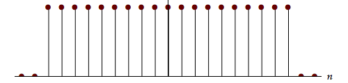 |
| Bartlett | $1 - \left| {\frac{n}{N}} \right|$ | 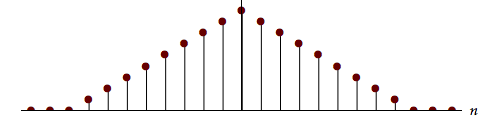 |
| Parzen | $1 - {\left( {\frac{n}{N}} \right)^2}$ | 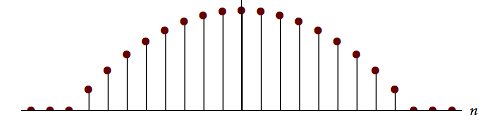 |
| Gaussian-based windows | ||
| Gauss | ${e^{ - q}}\,\,\,\,\,\,\,\,q = \frac{1}{2}{\left( {\frac{n}{{\sigma N}}} \right)^2}$ | 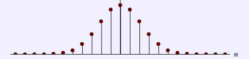 |
| Verbeek | $\left( {1 + q + \frac{{{q^2}}}{2}} \right){e^{ - q}}\,\,\,\,\,\,\,\,q = \frac{1}{2}{\left( {\frac{n}{{\sigma N}}} \right)^2}$ | 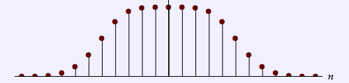 |
| Cosine-based windows | ||
| Tukey | $0.5 + 0.5\cos \left( {\frac{{\pi n}}{N}} \right)$ | 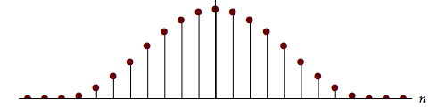 |
| Hamming | $0.54 + 0.46\cos \left( {\frac{{\pi n}}{N}} \right)$ | 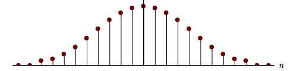 |
| Hann | $\cos \left( {\frac{{\pi n}}{2N}} \right)$ | 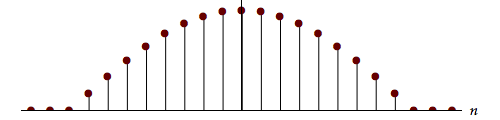 |
Table 12.1: Definition of window functions. All windows, $w[n],$ are defined over the interval $- N \le n \le + N$ and are identically zero outside this interval. For the examples shown below on the right, $N = 9$ and $\sigma = 1/3.$
Comparison of these windows reveals some of the consequences associated with each choice. We denote the time duration as \(\Delta {n_{rms}}\) and the bandwidth as \(\Delta {\Omega _{rms}}.\) They are defined by:
| (12.23) |
$$\Delta {n_{rms}} = \sqrt {\left( {\sum\limits_{n = - N}^{ + N} {{n^2}{w^2}[n]} } \right)/\left( {\sum\limits_{n = - N}^{ + N} {{w^2}[n]} } \right)}$$
|
| (12.24) |
$$\Delta {\Omega _{rms}} = \sqrt {\left( {\int\limits_{ - \pi }^{ + \pi } {{\Omega ^2}{{\left| {W(\Omega )} \right|}^2}d\Omega } } \right)/\left( {\int\limits_{ - \pi }^{ + \pi } {{{\left| {W(\Omega )} \right|}^2}d\Omega } } \right)}$$
|
These two measures are intentionally chosen to resemble the “standard deviation” of an associated (even) “probability” function. In the case of Equation 12.23, it is the normalized function \({\left| {w[n]} \right|^2}.\) In the case of Equation 12.24, it is the normalized function \({\left| {W\left( \Omega \right)} \right|^2}\) . We do this because it is possible to show that, for all continuous-time signals, the time-bandwidth product \(\Delta {t_{rms}}\Delta {\omega _{rms}} \ge 1/2.\) This is, of course, the well-known Uncertainty Principle. Further, it can be shown that for continuous-time signals, the Gaussian signal (filter) achieves the minimum. This result holds for discrete-time signals but a proof has, to our knowledge, not been published. The proof of this result, the Uncertainty Principle for discrete-time signals \(\Delta {n_{rms}}\Delta {\Omega _{rms}} \ge 1/2,\) is, therefore, presented in Appendix II.
Table 12.2 shows the values for the time duration, frequency bandwidth, and time-bandwidth product for each of the eight windows defined in Table 12.1 and using \(N = 9\) and \(\sigma = 1/3.\)
| Window | W(Ω) | Δnrms | ΔΩrms | Δnrms ΔΩrms |
|---|---|---|---|---|
| Window | W(Ω) | Δnrms | ΔΩrms | Δnrms ΔΩrms |
| Verbeek | 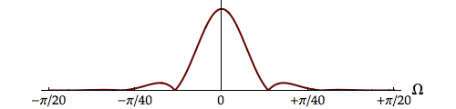 | 3.739 | 0.166 | 0.619 |
| Hann | 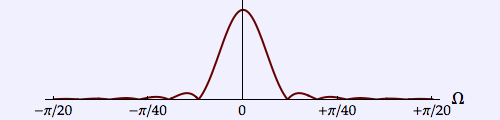 | 3.253 | 0.177 | 0.577 |
| Parzen | 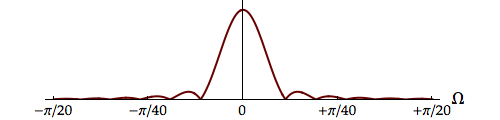 | 3.401 | 0.179 | 0.611 |
| Hamming | 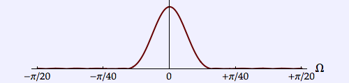 | 2.764 | 0.186 | 0.515 |
| Bartlett | 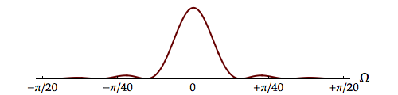 | 2.837 | 0.197 | 0.558 |
| Tukey | 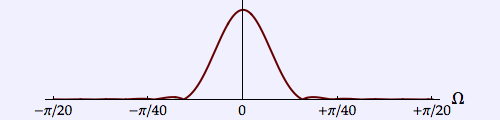 | 2.550 | 0.200 | 0.510 |
| Gauss | 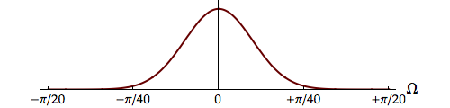 | 2.121 | 0.236 | 0.5 |
| Block | 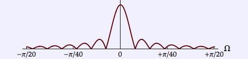 | 5.477 | 0.382 | 2.093 |
Table 12.2: Comparison of window functions. $\Delta {n_{rms}}$ = $rms$ width of the window in the discrete-time domain, $\Delta {\Omega _{rms}}$ = $rms$ width of the window spectrum in the frequency domain, and $\Delta {n_{rms}}\Delta {\Omega _{rms}}$ = the time-bandwidth product. Windows are defined over the interval $- N \le n \le + N$ and are identically zero outside this interval. The numerical values are, again, calculated for $N = 9$ and $\sigma = 1/3.$ Because all the windows involve the same $2N + 1$ samples, they are sorted according to increasing values of the spectral width, $\Delta {\Omega _{rms}}. $
At first glance we might seem to desire a filter that yields a good spectral estimate while using a minimum amount of data. This translates to a small duration and a small bandwidth. But in Table 12.1 and Table 12.2, the filters and their spectra that are displayed, all involve the same amount of data, \(2N + 1\) samples.
A small spectral bandwidth comes from the desire to have \(W\left( \Omega \right)\) as much like \(2\pi \,\delta \left( \Omega \right)\) as possible. See Equation 12.14 and Equation 12.15. On this basis we would choose the Verbeek window from among those presented here as it has the smallest bandwidth. We note, in passing, that the discrete-time version of the Gauss window does achieve the minimum time-bandwidth product predicted by the Uncertainty Principle but that its bandwidth is 42% wider than the Verbeek window.
Problems¶
Problem 12.1¶
In Equation 12.17 we presented the spectrum \({W_P}\left( \Omega \right)\) associated with the Block window \({w_P}[n].\)
- Determine \({W_I}\left( \Omega \right),\) the spectrum associated with the Bartlett window \({w_I}[n].\)
We define the width of the main lobe of a window spectrum \(W\left( \Omega \right)\) as the distance between the first two positions on the frequency axis around \(\Omega = 0\) where \(W\left( \Omega \right) = 0.\) This is illustrated in Figure 12.4.
For a window consisting of \(2N + 1\) samples, determine the width of the main lobe for each of the following windows:
- Block (rectangular) window
- Bartlett (triangular) window
- Parzen (parabolic) window
- Tukey window
- Hann window
Problem 12.2¶
Eight different windows have been examined in this chapter. How and why does one develop a new window? To address this question let us look at the characteristics a window “should” have.
It should i) be narrow in the time domain to use as few samples as possible, ii) be narrow in the frequency domain so that it resembles an impulse; see Equation 12.14, iii) have a narrow main lobe so that the distortion caused by the convolution in Equation 12.14 should be minimized, and iv) have small sidelobes for the same reason. In this problem we will look at the implications of the first two requirements, (i) and (ii). Further, we will cast the discussion in the continuous-time domain \(t\) and the associated frequency domain \(\omega\) for simplicity’s sake.
The limits of what can be achieved given requirements (i) and (ii) are described in the Uncertainty Principle (Chapter 12 and Chapter 13). The duration-bandwidth product has a lower bound and we know that the Gaussian window achieves this bound. But as we shall see in Laboratory Exercise 12.4, the actual performance of the Gaussian window when compared, for example, to a Block (rectangular) window can leave much to be desired.
An explanation for this is that multiplying the recorded data by a Gaussian window suppresses the amplitude information of a significant number of samples, information that could be used to obtain a better estimate of the power spectral density. This suppression is illustrated in Figure 12.5.
- The value of \(\sigma\) used in Figure 12.5 is \(\sigma = 1/4\) when defined on the zero-centered interval (–1, +1). How many samples correspond to \(\sigma?\) How many seconds?
Through this choice of \(\sigma\) the Gaussian tapers smoothly to zero at the edges of the window. In 2003, Verbeek3 considered how the Gaussian window could be modified such that less data would be suppressed in amplitude while the smooth tapering would be maintained. He reasoned as follows.
If the Gaussian window \({w_G}(q) = {e^{ - {q^2}/2}}\) is multiplied by \({e^{ + {q^2}/2}}\) then the result is \(1\) and the window is flat like the Block filter. If instead, a Taylor series expansion \(P(q)\) of \({e^{ + {q^2}/2}}\) around \(q = 0\) is used to multiply \({e^{ - {q^2}/2}},\) then the modified Gaussian window will be flat in the vicinity of \(q = 0.\)
- What is the Taylor series expansion of \({e^{ + {q^2}/2}}\) around \(q = 0\) to second order, that is, a second-order polynomial \({P_2}(q)?\)
- Is the modified window \({w_V}(q) = {P_2}(q)\,{e^{ - {q^2}/2}}\) flat around \(q = 0?\) To assess this, look at derivatives \({d^m}{w_V}(q)/d{q^m}\) of the modified window around \(q = 0\) for various values of \(m.\) What is the first value of \(m\) such that the value of that derivative at \(q = 0\) is not flat?
- Plot \({w_G}(q)\) and \({w_V}(q)\) over the interval \(- 5 \leq q \leq + 5.\)
- Determine the spectra \({W_G}(\omega ) =\) \({\mathscr{F}}\left\{ {{w_G}(q)} \right\}\) and \({W_V}(\omega ) =\) \({\mathscr{F}}\left\{ {{w_V}(q)} \right\}.\) Hint: What is the mathematical relationship between \({W_G}(\omega )\) and \({W_V}(\omega )?\)
- Plot the spectra over the interval \(- 4 \leq \omega \leq + 4.\)
Use of the Verbeek window and other windows will be explored in Laboratory Exercise 12.3 and Laboratory Exercise 12.4.
Problem 12.3¶
This problem concerns the recognition of separate musical tones. Full disclosure: We wrote this problem for the 2002 Dutch Physics Olympiad. Caveat emptor!
The musical notes middle \(A\) and middle \({A^\# }\) are known to have the frequencies:
The positions of these notes on a piano keyboard are shown in Figure 12.6. A single sound, not from the piano, has been recorded which consists of either \(A,\) \({A^\# },\) or the normalized sum of \(A\) and \({A^\# }.\) The recorded signal is also shown in Figure 12.6. The \(SNR > 60\) dB.
- What is the minimum length of time \(T\) in seconds that is required to distinguish between the three alternatives: \(A,\) \({A^\# },\) or \(\left( {A + {A^\# }} \right)/2?\)
- Explain your choice of measurement technique and what the consequences are for the accuracy of your determination.
Laboratory Exercises¶
Laboratory Exercise 12.1¶
| We examine the practical aspects of estimating the spectrum of a “trivial” signal. Click on the icon to the left to start. |
Laboratory Exercise 12.2¶
| Modern society has taught us to be impatient. We want everything to be available now. In spectral estimation that means using as few samples as possible. What are the consequences? To start the exercise, click on the icon to the left. |
Laboratory Exercise 12.3¶
| Using a finite amount of data to estimate a spectrum—any spectrum—is like observing the data source through a window. What is the effect of the window and what if we “shape” the window? To start the exercise, click on the icon to the left. |
Laboratory Exercise 12.4¶
| We continue to explore the effects of window size and window shape. But now let us throw a little noise into the spectral estimation problem. To start the exercise, click on the icon to the left. |
-
All data are “windowed”. There are no data available from before the Big Bang. ↩
-
Jenkins, G. M. and D. G. Watts (1998). Spectral Analysis and Its Applications, Emerson Adams Press ↩↩
-
Verbeek, P. W. (2003). A modified Gaussian window for spectral estimation. Department of Imaging Science & Technology, Delft University of Technology ↩